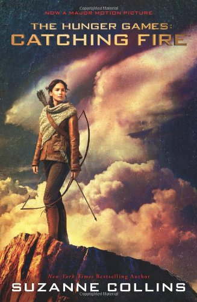

"I clasp the flask between my hands even though the warmth from the tea has long since leached into the frozen air. My muscles are clenched tight against the cold. If a pack of wild dogs were to appear at this moment the odds of scaling a tree before they attacked are not in my favor. I should get up, move around, and work the stiffness from my limbs. But instead I sit, as motionless as the rock beneath me, wild the dawn begins to lighten the woods. I can't fight the sun. I can only watch helplessly as it drags me into a day that I've been dreading for months."
"By noon they will all bw at my new house in the Victor's Village. The reporters, the camera crews, even Effie Trinket, my old escort, will have made their way to District 12 from the Capitol. I wonder if Effie will still be wearing that silly pink wig, or if she'll be sporting some other unnatural color especially for the Victory Tour. There will be others waiting, too. A staff to cater to my every need on the long train trip. A prep team to beautify me for public appearances. My stylist and friend, Cinna, who designed the gorgeous outfits that first made the audience take notice of me in the Hunger Games."
"If it were up to me, I would try to forget the Hunger Games entirely. Never speak of them. Pretend they were nothing but a bad dream. But the Victory Tour makes that impossible. Strategically places almost midway between the annual Games, it is the Capitol's way of keeping the horror fresh and immediate. Not only are we in the districts forced to remember the iron grip of the Capitol's power each year we are forced to celebrate it. And this year, I am one of the stars of the show. I will have to travel from district to district, to stand before the cheering crowds who secretly loathe me, to look down into the daces of the families whose children I have killed..."